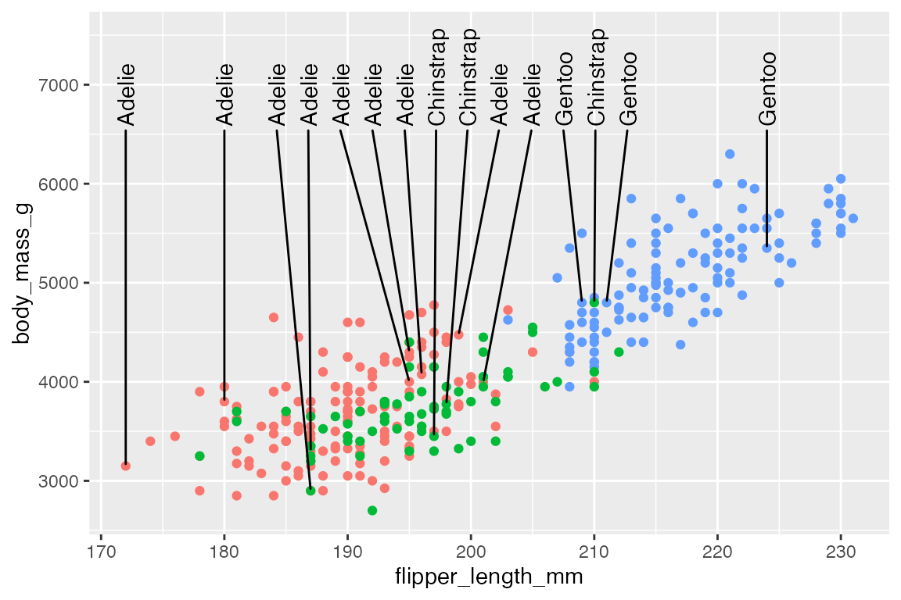
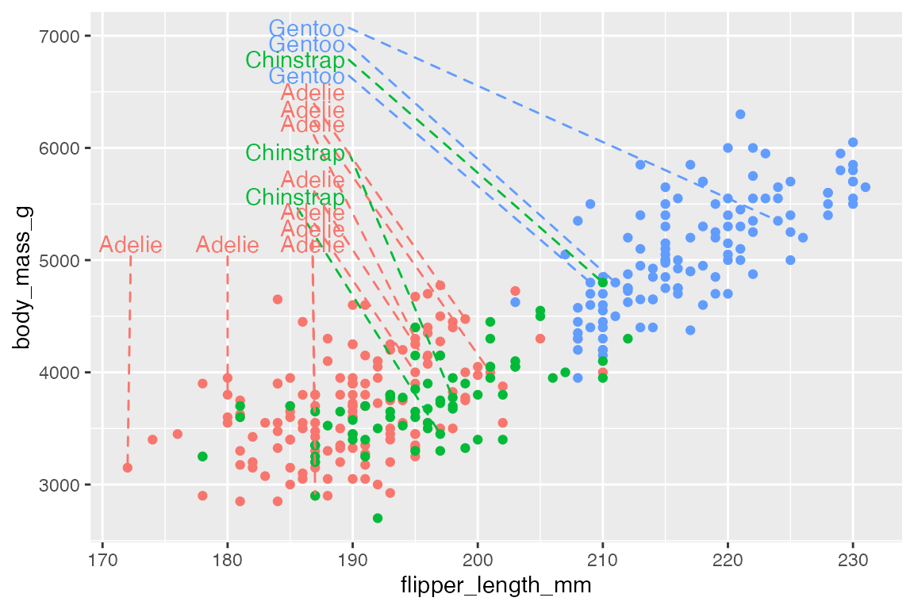
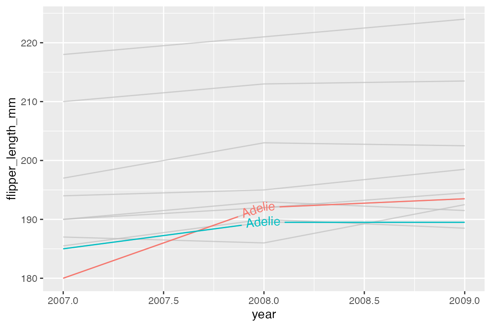
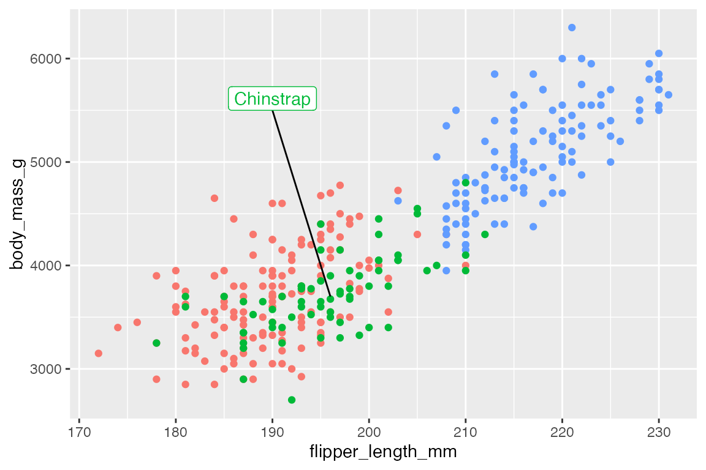
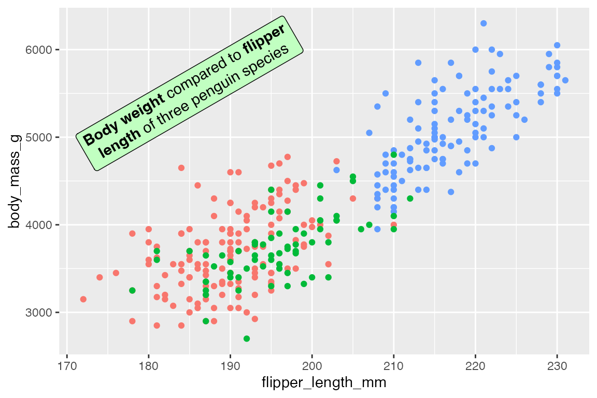
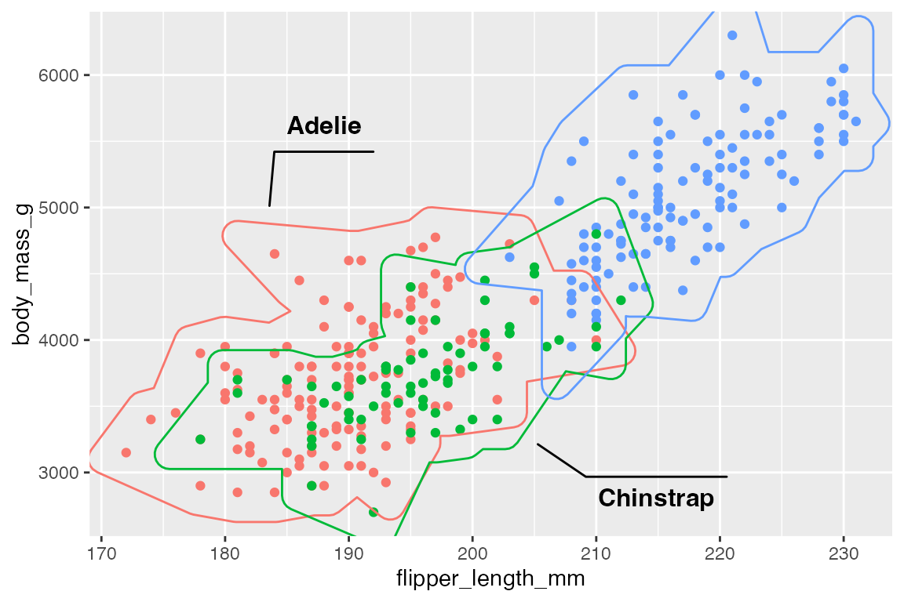
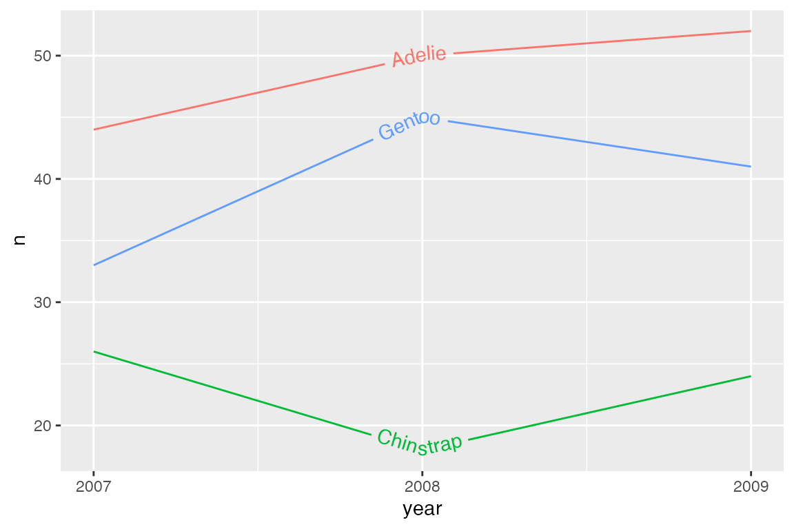
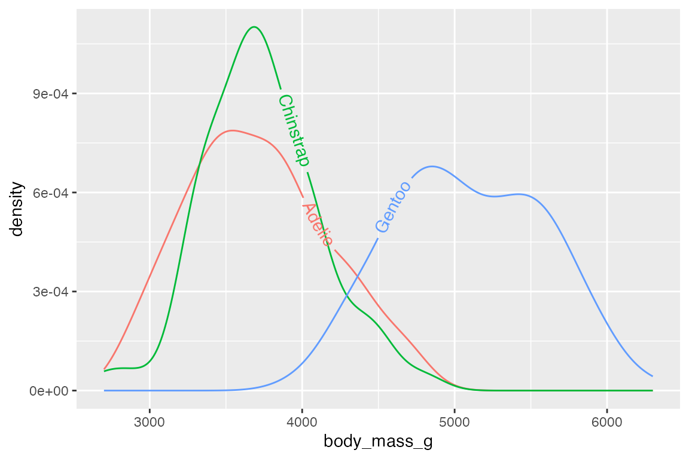
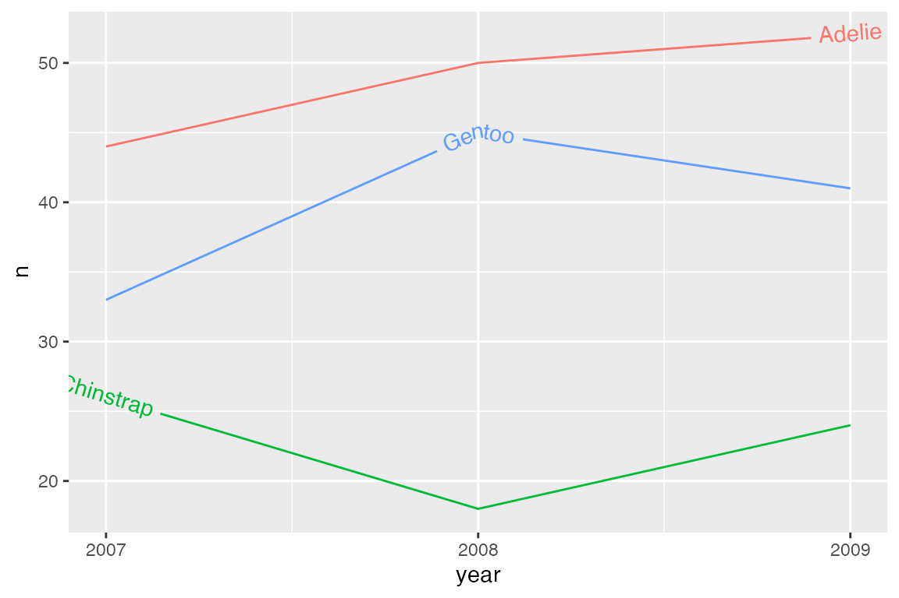

library(ggplot2)
library(dplyr)
library(palmerpenguins)
library(ggrepel)
library(gghighlight)
library(ggtext)
library(ggforce)
library(geomtextpath)
# Data
penguins <- penguins |>
filter(!is.na(flipper_length_mm),
!is.na(sex))
# Subset of data for labeling
set.seed(42)
penguins_sub <- penguins |>
slice_sample(n = 15)
# Base plot
p <- penguins |>
ggplot(aes(x = flipper_length_mm,
y = body_mass_g)) +
geom_point(aes(color = species),
show.legend = FALSE)15 Annotations
Annotations help to provide context and highlight important aspects of data. The meta data used for annotations is just another form of data, and so many ways to annotate a plot follow the same forms as plotting the data. There are a variety of geoms that can be used for annotations, in particular geom_text() and geom_label(), but also geom_segment(), geom_curve() and the reference line geoms discussed in Section 14.7.3. These geoms work like any other geom; they take a data frame for their data argument and require certain sets of placement aesthetics. When you want to add annotations that are not in the data itself, you can use annotate(), which creates the data frame for you and allows you to choose which geom to use. Finally, there are a number of ggplot2 extension packages that help create annotations, label geoms, and highlight aspects of the plot.
15.1 Resources
- Annotation documentation
- Wickham, ggplot2 Book: Annotations
- R for Data Science: Communication, Annotations
15.1.1 Packages
15.2 Text labels
The simplest form of annotation is text labels with geom_text() and geom_label(). This uses a label aesthetic to place text wherever they are positioned by the x and y aesthetic. If you use these geoms in the place of geom_point() you get quite a mess.
penguins |>
ggplot(aes(x = flipper_length_mm,
y = body_mass_g,
color = species)) +
geom_text(aes(label = species),
show.legend = FALSE)
penguins |>
ggplot(aes(x = flipper_length_mm,
y = body_mass_g,
color = species)) +
geom_label(aes(label = species),
show.legend = FALSE)geom_text() and geom_label() are best used to highlight a small number of points using a subset of the data, such as the smallest and largest penguins.
# Smallesy and largest penguins
body_mass_sub <- bind_rows(
slice_max(penguins, body_mass_g),
slice_min(penguins, body_mass_g)
)
p +
geom_text(data = body_mass_sub,
aes(label = species))
15.2.1 Nudge
One way to move the text/label away from the point so that both the point and the label can be seen is to manually nudge the them using nudge_x and nudge_y, which are scaled to the x and y axes.
15.2.2 Alignment
Another way to alter the position of the text/label is to alter the alignment with vjust and hjust. See Aesthetic specifications vignette: Justification for more information. The arguments take:
-
hjust: Horizontal justification-
"left"or0: text begins on the point and moves to the right. -
"center"or0.5: Default -
"right"or1: text ends on the point with the text to the left.
-
-
vjust: Vertical justification-
"bottom"or0: the bottom of the text is on the point, moving the text up. -
"middle"or0.5: Default -
"top"or1: the top of the text is on the point, moving the text down.
-
- Special position:
-
"inward": towards the center -
"outward": away from the center
-
Alignment and nudge can be used together.
p +
geom_text(data = body_mass_sub,
aes(label = species),
vjust = "top", hjust = "left",
nudge_x = 1)The special alignment parameters of "inward" and "outward" are particularly useful because they can move the text different ways depending on where they are in the plot.
15.2.3 Labeling bar plots
Labeling bar plots is best done with geom_col() since you need the number used for the height of the bar to also act as the label. The main issue is whether to place the label inside or outside of the bar. This can be done with a combinations of vjust and nudge_y for vertical bar plots and hjust and nudge_x for horizontal bar plots. For a good example of more complex labeling of bar plots see Cedric Scherer’s post on labeling bar plots.
Vertical
# Above
penguins |>
count(species) |>
ggplot(aes(x = species, y = n)) +
geom_col() +
geom_text(aes(label = n),
vjust = 0, nudge_y = 2,
fontface = "bold")
# Inside
penguins |>
count(species) |>
ggplot(aes(x = species, y = n)) +
geom_col() +
geom_text(aes(label = n),
vjust = 1, nudge_y = -2,
color = "white", fontface = "bold")
Horizontal
Dodge
Using position_dodge() creates some complexity because ggplot2 does not know the width of the dodge should be the same as the bars. Using width = 0.9 places the labels in the center of the bars. The other complexity is that you cannot use nudge if you use a position adjustment. Therefore, you need to directly change the y variable. Here, y = n + 2 is the same as nudge_y = 2.
Stacked
Use vjust and adjustments to the y variable within position_stack() to place labels within stacked bar plots. To place the labels in the middle of the bars use vjust = 0.5.
15.3 ggrepel
ggrepel uses an algorithmic approach to minimize overlap of points. This quickly and easily fixes the issues of labels overlapping the points so that you do not need to use nudge and alignment adjustments. The Examples vignette does a good job of showing the wide range of features available in ggrepel.
p +
geom_text_repel(data = body_mass_sub,
aes(label = species))By default, ggrepel will not show labels if there are too many overlaps. This results in a warning. This can be changed with max.overlaps, which defaults to 10. Setting max.overlaps = Inf ensures that all labels are plotted even with overlaps.
p +
geom_text_repel(data = slice_sample(penguins, n = 25),
aes(label = species),
max.overlaps = Inf)Use box.padding to space out labels. Default is 0.25 lines. Compare smaller box.padding with larger box.padding.
# No padding: labels closer together
p +
geom_text_repel(data = penguins_sub,
aes(label = species),
box.padding = 0)# Padding: labels more spread out
p +
geom_text_repel(data = penguins_sub,
aes(label = species),
box.padding = 0.5)15.3.1 Limit labels to a specific area
xlim and ylim arguments constrain the labels to a specific area. Limits are specified in data coordinates. Use NA when there is no lower or upper bound in a particular direction. For instance, we can move the labels to the upper-left of the plot. Use direction = "y" to have the labels stack on top of each other, while expanding the y limits of the plot gives more room for the labels.
p +
geom_text_repel(data = penguins_sub,
aes(label = species),
xlim = c(NA, 190),
ylim = c(5000, NA),
direction = "y") +
ylim(c(NA, 7500))Or align the labels along the top using direction = "x" and angling the text at 90 degrees.
p +
geom_text_repel(data = penguins_sub,
aes(label = species),
ylim = c(6500, NA),
direction = "x",
angle = 90) +
ylim(c(NA, 7500))
15.3.2 Line segments
Always, or never, draw line segments with min.segment.length
-
min.segment.length = 0: draw line segments for all labels, no matter how short they are. -
min.segment.length = Inf: never draw any line segments, no matter how long they are.
p +
geom_text_repel(data = penguins_sub,
aes(label = species),
min.segment.length = 0)Line segments have many of the same adjustments as geom_segment(). Arguments for lines are:
segment.linetypesegment.colorsegment.sizesegment.alpha
For instance, we can have the line segments and the labels use the same color scale as the points. To do this, you need to use scale_color_discrete() to let the color scale know it should apply to both the color and segment.color aesthetics.
p +
geom_text_repel(data = penguins_sub,
aes(label = species,
segment.color = species,
color = species),
xlim = c(NA, 190),
ylim = c(5000, NA),
direction = "y",
segment.linetype = 2) +
ylim(c(NA, 7000)) +
scale_color_discrete(
# The same color scale will apply to both of these aesthetics.
aesthetics = c("color", "segment.color")
) +
theme(legend.position = "none")
You can make curved line segments and add arrows just like in geom_curve(). See below Section 15.5.2.2 for more on controlling aspects of curves. Arguments for curvature are:
-
segment.curvature: Number from -1 to 1; negative for left-hand and positive for right-hand curves; 0 for straight lines. -
segment.angle: 0-180, less than 90 skews control points toward the start point. -
segment.ncp: number of control points to make a smoother curve. -
segment.shape: curve shape by control points. -
segment.inflect: whether there should be a curve inflection at the midpoint.
p +
geom_text_repel(data = penguins_sub,
aes(label = species),
xlim = c(NA, 190),
ylim = c(4500, NA),
direction = "y",
segment.curvature = -0.5,
arrow = arrow(length = unit(0.015, "npc"))) +
ylim(c(NA, 7500))Add an inflection point:
15.4 Highlighting
One of the simplest and most effective forms of annotating a plot is to highlight a subset of the data that is particularly relevant. There are a number of ways to do this.
15.4.1 Color a subset of points
Gray out non-essential data
A simple example is to only add color to a subset of the points that you want to highlight, while graying out other data. For instance, we can highlight the Adelie and Chinstrap penguins that have flippers longer or equal to 205mm. To do this, plot all of the data in gray and then plot the subset in color over it. Note the use of scale_color_manual() to maintain the same color palette as used for three species. See Section 18.3.3 and Section 18.3.4 for working with discrete and manual color scales.
ggplot(penguins,
aes(x = flipper_length_mm,
y = body_mass_g)) +
geom_point(color = "gray65") +
geom_point(
data = filter(penguins,
flipper_length_mm >= 205 & species != "Gentoo"),
aes(color = species)
) +
scale_color_manual(values = scales::hue_pal()(3)[c(1, 2)]) +
theme(legend.position = "none")Add a second layer to points
Another similar strategy is to add a second layer of points. This can either be to add a larger point in a different color underneath the full point layer or by adding a larger, open circle shape. For instance, in highlighting tubby Adelie penguins that weigh more than 4.5kg.
In creating a “color halo†make sure that the larger, colored point is drawn first.
ggplot(penguins,
aes(x = flipper_length_mm,
y = body_mass_g)) +
geom_point(
data = filter(penguins, body_mass_g > 4500 & species == "Adelie"),
color = "orange",
size = 3
) +
geom_point()A similar affect is created by surrounding the points with an open circle shape. This necessitates three geom_point() layers, one for the full data and two separate layers for the highlighted points.
ggplot(penguins,
aes(x = flipper_length_mm,
y = body_mass_g)) +
geom_point() +
geom_point(
data = filter(penguins, body_mass_g > 4500 & species == "Adelie"),
color = "purple"
) +
geom_point(
data = filter(penguins, body_mass_g > 4500 & species == "Adelie"),
color = "purple",
shape = "circle open", size = 3
)
15.4.2 gghighlight
gghighlight helps to automate the strategy of coloring only certain cases, while graying out all others. It works by adding a filtering layer to a ggplot with the gghighlight() function. The first argument is a filtering predicate that is passed to dplyr::filter(). You can have as many of these as you want.
ggplot(h, aes(x = year, y = flipper_length_mm, color = group)) +
geom_line() +
gghighlight(min(flipper_length_mm) <= 185)
#> label_key: groupLabels
gghighlight uses direct labeling by default, see Section 15.8 for more on this process. The label is chosen with the label_key argument. The label type is chosen with the line_label_type argument with choices of "ggrepel_label", "ggrepel_text", "text_path", "label_path", or "sec_axis".
ggplot(h, aes(x = year, y = flipper_length_mm, color = group)) +
geom_line() +
gghighlight(min(flipper_length_mm) <= 185,
label_key = species,
line_label_type = "text_path")
Remove direct labels with use_direct_label = FALSE.
ggplot(h, aes(x = year, y = flipper_length_mm, color = group)) +
geom_line() +
gghighlight(min(flipper_length_mm) <= 185,
use_direct_label = FALSE) +
theme(legend.position = "none")You can add your own text labels to the filtered data because gghighlight replaces the plot’s data with the filtered data. Note that the color for the highlighted points is placed in the geom_point() layer.
ggplot(penguins,
aes(x = flipper_length_mm,
y = body_mass_g)) +
geom_point(color = "purple") +
gghighlight(body_mass_g > 4500 & species == "Adelie") +
geom_text_repel(aes(label = body_mass_g),
max.overlaps = Inf,
box.padding = 0.3)Highlighted vs unhighlighted aesthetics
Change aspects of the highlighted cases within the geom and use unhighlighted_params with a list to change aesthetics of all other cases. For instance, make the line width of the highlighted cases larger, while using alpha to deemphasize other cases. Use colour = NULL to maintain color instead of graying out.
Geoms
gghighlight can be used with most geoms.
penguins |>
ggplot(aes(x = body_mass_g, fill = species)) +
geom_histogram(binwidth = 200) +
gghighlight(species == "Adelie")
#> Warning: Tried to calculate with group_by(), but the calculation failed.
#> Falling back to ungrouped filter operation...
#> label_key: speciesFacets
gghighlight works automatically with faceting, plotting the entirety of the data in its demphasized form along with each group.
penguins |>
ggplot(aes(x = body_mass_g, fill = species)) +
geom_histogram(binwidth = 200) +
gghighlight() +
facet_wrap(~ species)
#> label_key: species15.5 Custom annotations
15.5.1 geoms vs annotate()
You can use a number of geoms to create custom annotations:
- Text and labels:
geom_text() and geom_label() - Highlight rectangular regions:
geom_rect() - Draw lines and curves:
geom_line(),geom_sement(), andgeom_curve() - Draw reference lines:
geom_vline(),geom_hline(), andgeom_abline()
See Section 14.7.2 for using line and curve geoms and Section 14.7.3 for reference line geoms.
For instance, we can create a rectangle with a plot description in it using geom_rect() and geom_text().
rect <- data.frame(xmin = 170, xmax = 200, ymin = 5000, ymax = 6000)
t <- data.frame(
x = 185, y = 5500,
lab = "Body weight compared to flipper\nlength of three penguin species")
penguins |>
ggplot() +
# Place x and y aesthetics in geom_point() to be able to mix in different data
geom_point(aes(x = flipper_length_mm,
y = body_mass_g,
color = species),
show.legend = FALSE) +
geom_rect(data = rect,
aes(xmin = xmin, xmax = xmax, ymin = ymin, ymax = ymax),
fill = "darkseagreen1") +
geom_text(data = t,
aes(x = x, y = y, label = lab))The special annotate() function helps to create annotation geoms by making the data frames for you, so that you do not have to create one row data frames like rect and t but can just pass the data directly to annotate().
annotate() works by selecting the geom you want to create and then providing positional aesthetics necessary for that geom:
- Points and text:
xandy - Lines and curves:
x,xend,y, andyend - Rectangles:
xmin,xmax,ymin, andymax
Thus, the above plot can be recreated with annotate(). Notice that p can now be used because the data is automatically integrated into the penguins data used to make the plot.
p +
annotate(
geom = "rect",
xmin = 170, xmax = 200, ymin = 5000, ymax = 6000,
fill = "darkseagreen1"
) +
annotate(
geom = "text",
x = 185, y = 5500,
label = "Body weight compared to flipper\nlength of three penguin species"
)
To add multiple annotations of the same type use vectors:
15.5.2 Lines, curves, and arrows
Line segments
Adding lines to highlight specific areas or points of a plot can be an effective way to improve legibility of a plot.
# data
chinstrap <- penguins |>
filter(species == "Chinstrap")
end <- c(median(chinstrap$flipper_length_mm), median(chinstrap$body_mass_g))
p +
annotate(
geom = "segment",
x = 190, xend = end[[1]],
y = 5500, yend = end[[2]]
) +
annotate(
geom = "label",
x = 190, y = 5500,
vjust = 0,
label = "Chinstrap",
color = scales::hue_pal()(3)[[2]]
)
Curves
Create a curved line with geom = "curve". Arguments to control the nature of the curve are based on grid::curveGrob():
-
curvature: Direction of curvature and where to angle drawing of line segment.- Mostly between -1 and 1, but larger numbers creates more skewed lines.
- Negative values produce left-hand curves
- Positive values produce right-hand curves
- Zero produces a straight line.
- Default is
0.5.
-
angle: A numeric value between 0 and 180, for where the curve takes place along the line.-
< 90: make the curve take place further along the line segment. -
> 90: make the curve occur earlier along the line segment.
-
-
ncp: The number of control points used to draw the curve. More control points creates a smoother curve. Default is5.
Default curve
p +
annotate(
geom = "curve",
x = 180, xend = end[[1]],
y = 5500, yend = end[[2]]
) +
annotate(
geom = "label",
x = 180, y = 5500,
hjust = 1,
vjust = 0,
label = "Chinstrap",
color = scales::hue_pal()(3)[[2]]
)Left-hand curve with curve skewed towards the beginning of the line segment:
Arrows
Both geom_segment() and geom_curve() have arguments for arrow to add arrows on one or both sides of the line segments using the arrow() function, which is exported from grid::arrow(). Arguments for controlling the aesthetics of arrows:
-
angle: Angle of the arrow point. Default is 30 degrees. -
length: Length of the arrow head, usingunit(). -
ends: Where to draw arrow head: One of"last","first", or"both". -
type: Either"open"or"closed"arrow head.
p +
annotate(
geom = "curve",
x = 180, xend = end[[1]],
y = 5500, yend = end[[2]],
curvature = -0.5,
angle = 135,
arrow = arrow(length = unit(0.05, "npc"),
type = "closed")
) +
annotate(
geom = "label",
x = 180, y = 5500,
hjust = 1,
vjust = 0,
label = "Chinstrap",
color = scales::hue_pal()(3)[[2]]
)15.6 ggtext
The ggtext package provides two geoms for creating text annotations with markdown and html rendering for ggplot2 that can replace geom_text() or geom_label(). In addition to the geoms, ggtext also provides a way to render markdown and html in plot theme elements, see Section 23.9. In both the geoms and the theme elements ggtext provides two alternatives: markdown text labels and markdown text boxes with word wrapping. The actual rendering of the markdown and html is done by the gridtext package. ggtext only supports a small subset of markdown/html capabilities. For a list of supported Markdown and HTML capabilities, see Section 23.9.1 for a list of supported capabilities and the valid Markdown, HTML, and CSS that can be used.
15.6.1 ggtext geoms
geom_richtext() creates markdown labels and is mostly a replacement for geom_label() or geom_text() with added capabilities. For instance, we can recreate the text annotations in Section 15.5.1 with some rich text.
t <- data.frame(
x = 185, y = 5500,
lab = "**Body weight** compared to **flipper<br>length** of three penguin species")
p +
geom_richtext(data = t,
aes(x = x, y = y, label = lab),
fill = "darkseagreen1")The text can be angled with geom_richtext():
p +
geom_richtext(data = t,
aes(x = x, y = y, label = lab),
fill = "darkseagreen1",
angle = 30)
Use fill = NA and label.color = NA to remove the background and box around the text.
p +
geom_richtext(data = t,
aes(x = x, y = y, label = lab),
fill = NA,
label.color = NA)geom_textbox() is very similar to geom_richtext(), but it automatically wraps text and does not support arbitrary rotation angles, though it can be rotated at right angles.
t <- data.frame(
x = 185, y = 5500,
lab = paste("**Body weight** compared to **flipper length**",
"of three penguin species: Adelie, Chinstrap, and Gentoo",
"on the islands of Biscoe, Dream, and Torgersen."))
p +
geom_textbox(data = t,
aes(x = x, y = y, label = lab),
fill = "darkseagreen1")Control the width and height of the text box with width and height. The defaults are width = unit(2, "inch") and height = NULL to be determined by the width. Use halign and valign to control the horizontal and vertical justification of the text within the box, as opposed to hjust and vjust that determine the alignment of the box. The orientation of the text can be one of "upright", "left-rotated", "right-rotated", or "inverted".
p +
geom_textbox(data = t,
aes(x = x, y = y, label = lab),
fill = "darkseagreen1",
# Take up 45% of plot panel width
width = unit(0.45, "npc"),
halign = 1)15.7 ggforce
15.7.1 Geoms
The ggforce package provides four geoms to annotate areas of a plot, differing by the shape that they draw.
p +
geom_mark_rect(
aes(group = species))
p +
geom_mark_hull(
aes(fill = species))15.7.2 Filter
geom_mark_*() functions contain a filter aesthetic since you often only want to highlight specific groups in a plot. Using the aesthetic is easier than creating a filtered data set, and the labels will know to not overlap with the rest of the data.
p +
geom_mark_hull(
aes(fill = species,
filter = species == "Gentoo"),
show.legend = FALSE) +
scale_fill_manual(values = scales::hue_pal()(3)[[3]])15.7.3 Labels
Using the label aesthetic adds labels to mark geoms with a bent line to connect to the label.
p +
geom_mark_hull(
aes(color = species,
label = species),
show.legend = FALSE)Use label.* arguments to change aspects to the labels and con.* arguments to alter aspects of the connecting line. Particularly relevant is label.fill = "transparent" and the con.type argument that can be one of "elbow", "straight", or "none".
p +
geom_mark_hull(
aes(color = species,
label = species),
label.fill = "transparent",
con.type = "straight",
show.legend = FALSE)
It is also possible to add longer descriptions to the labels that are automatically wrapped. The description aesthetic can either be tied to a variable in the data or provided directly if there is only one highlighted area.
p +
geom_mark_hull(
aes(group = species,
filter = species == "Gentoo",
label = species,
description = "The largest of the three penguin species."),
show.legend = FALSE)15.8 Direct labeling
There are a number of tools to automate the process of directly labeling a plot instead of doing it by hand. Two examples are directlabels and geomtextpath.
15.8.1 directlabels
The directlabels package introduces a number of placement methods for algorithmically placing labels on a plot using geom_dl(). See here for a list of the possible placement methods. The most useful one for a scatter plot is "smart.grid", which positions the labels near the center of each point cloud.
There are also placement methods optimized for line plots such as "last.points".
15.8.2 geomtextpath
The geomtextpath package focuses on creating labels along lines and particularly along curved lines. geomtextpath works by creating new geoms that are named either geom_text*() or geom_label*(). They create both the geom and the label/text.
p_line +
geom_textline(aes(label = species)) +
scale_x_continuous(breaks = c(2007, 2008, 2009)) +
theme(legend.position = "none")
geomtextpath is particularly designed to allow labels to follow curves.
penguins |>
ggplot(aes(x = body_mass_g, color = species)) +
geom_textdensity(aes(label = species)) +
theme(legend.position = "none")
Set different text and line colors with textcolor and linecolor.
p_line +
geom_textline(aes(label = species),
textcolor = "firebrick",
linecolor = "dodgerblue") +
scale_x_continuous(breaks = c(2007, 2008, 2009)) +
theme(legend.position = "none")Text justification
Horizontal justification
hjust is used to justify text along the curve/line.
p_line +
geom_textline(aes(label = species),
hjust = 1) +
scale_x_continuous(breaks = c(2007, 2008, 2009)) +
theme(legend.position = "none")An alternative is to use a text string to highlight a particular position relative to x and y coordinates for each line. The options are: “xmin”, “xmid”, “xmax”, “ymin”, “ymid”, “ymax”, and “auto”.
p_line +
geom_textline(aes(label = species),
hjust = "ymax") +
scale_x_continuous(breaks = c(2007, 2008, 2009)) +
theme(legend.position = "none")
hjust = "auto" finds the straightest segment for the labels.
penguins |>
ggplot(aes(x = body_mass_g, color = species)) +
geom_textdensity(aes(label = species),
hjust = "auto") +
theme(legend.position = "none")To align multi-line text use halign instead of hjust. This can be one of "left", "center", or "right".
Vertical justification
vjust is used to justify text orthogonal to the curve/line, as an offset to the path of the line/curve. vjust = 0 aligns the bottom of the text with the curve, whereas vjust = 1 aligns the top of the text with the curve.
p_line +
geom_textline(aes(label = species),
vjust = 0) +
scale_x_continuous(breaks = c(2007, 2008, 2009)) +
theme(legend.position = "none")vjust outside [0, 1] does not intersect with the line. Thus, both the text and the line will be drawn. If you do not want the line to be drawn, use gap = TRUE.
p_line +
geom_textline(aes(label = species),
vjust = -0.5,
hjust = 1) +
scale_x_continuous(breaks = c(2007, 2008, 2009)) +
theme(legend.position = "none")An alternative to vjust is to use offset with grid::unit(). If this option is used, vjust is ignored and gap should be set to FALSE.
p_line +
geom_textline(aes(label = species),
offset = unit(1, "mm"),
gap = FALSE,
hjust = 1) +
scale_x_continuous(breaks = c(2007, 2008, 2009)) +
theme(legend.position = "none")It is possible to use multiple justification parameters for the different lines with scale_hjust_discrete(), scale_vjust_discrete(), scale_hjust_manual() and/or scale_vjust_manual(). Use discrete options to automatically differ the horizontal or vertical justification of each group. Use manual options to pick the different levels of justification.
p_line +
geom_textline(aes(label = species,
hjust = species,
vjust = species)) +
scale_hjust_discrete(range = c(0.25, 0.75)) +
scale_vjust_manual(values = c(1.5, 0.25, -0.5)) +
scale_x_continuous(breaks = c(2007, 2008, 2009)) +
theme(legend.position = "none")
Rich text
Rich text support is provided by ggtext and can be turned on with rich = TRUE.